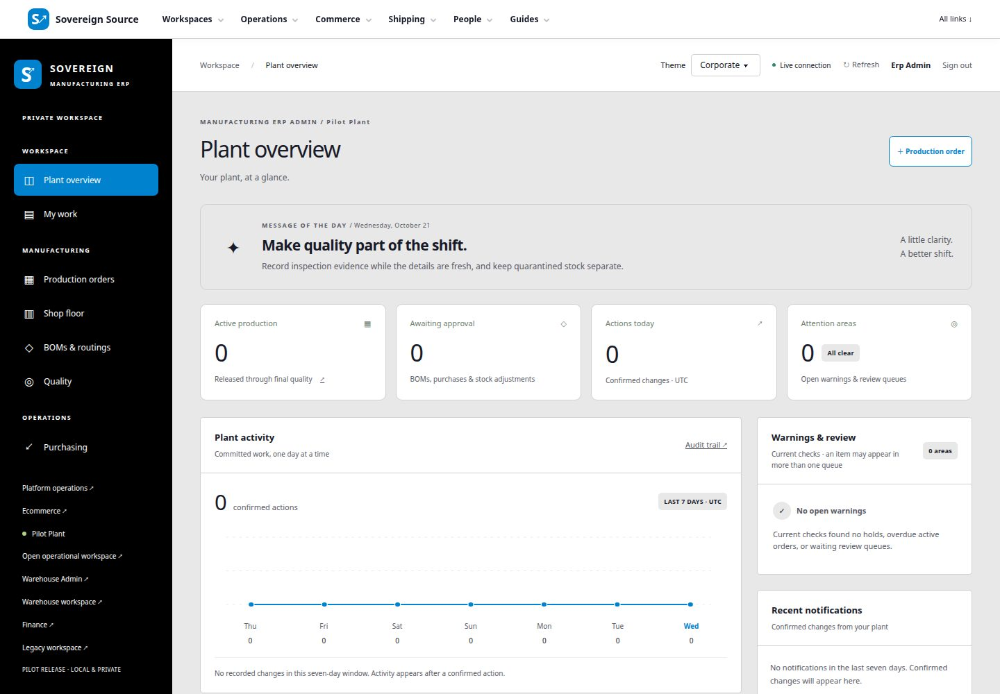
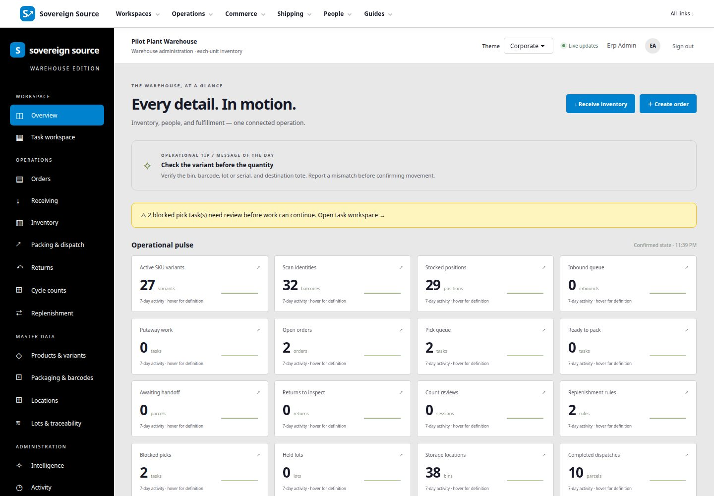
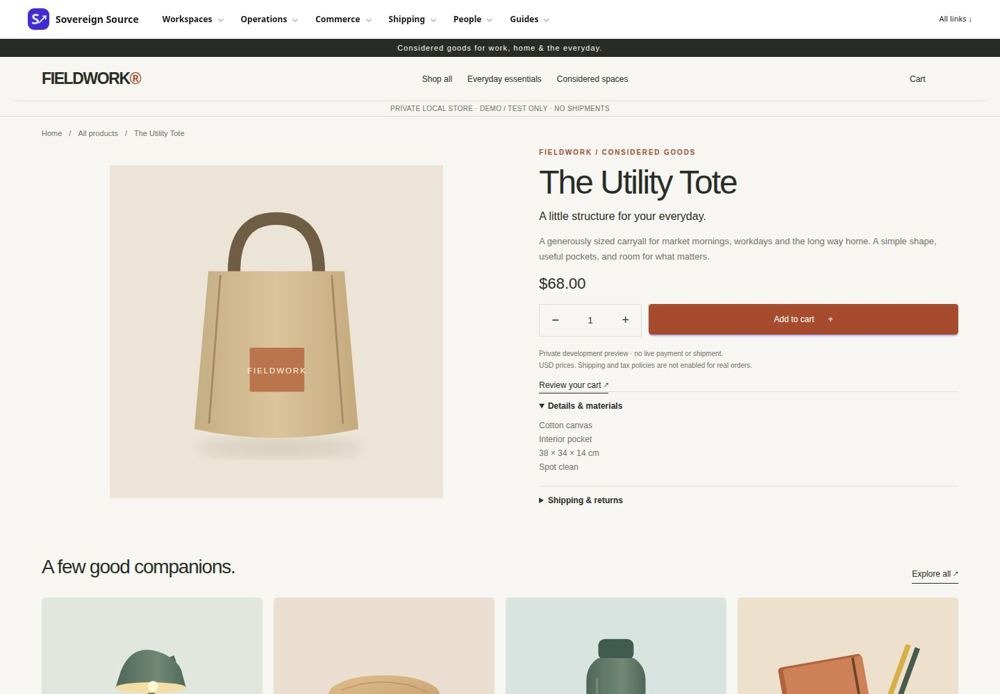
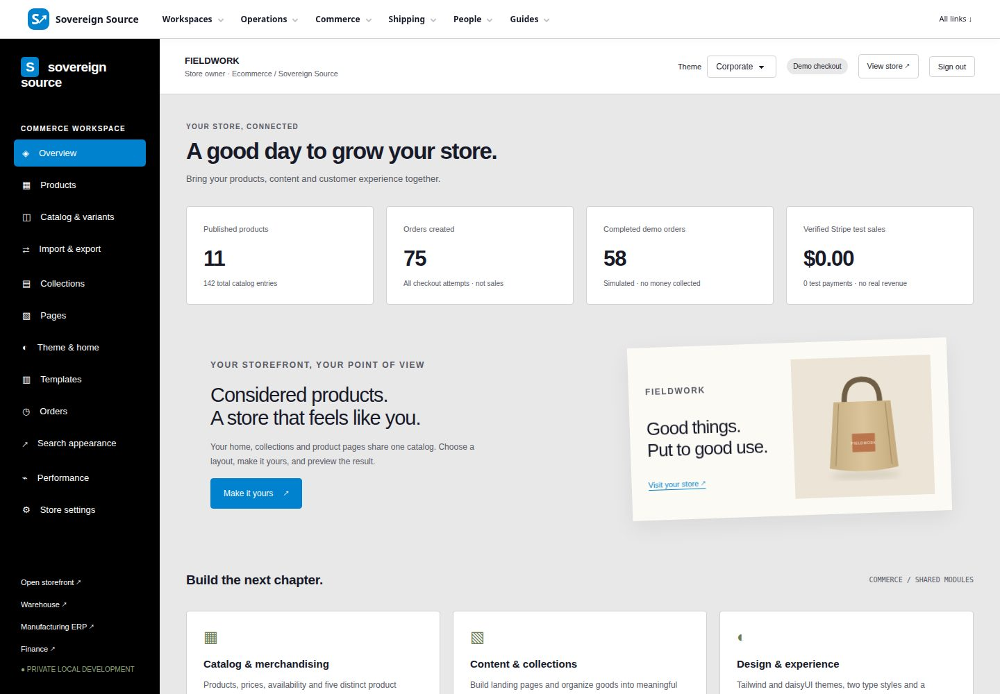
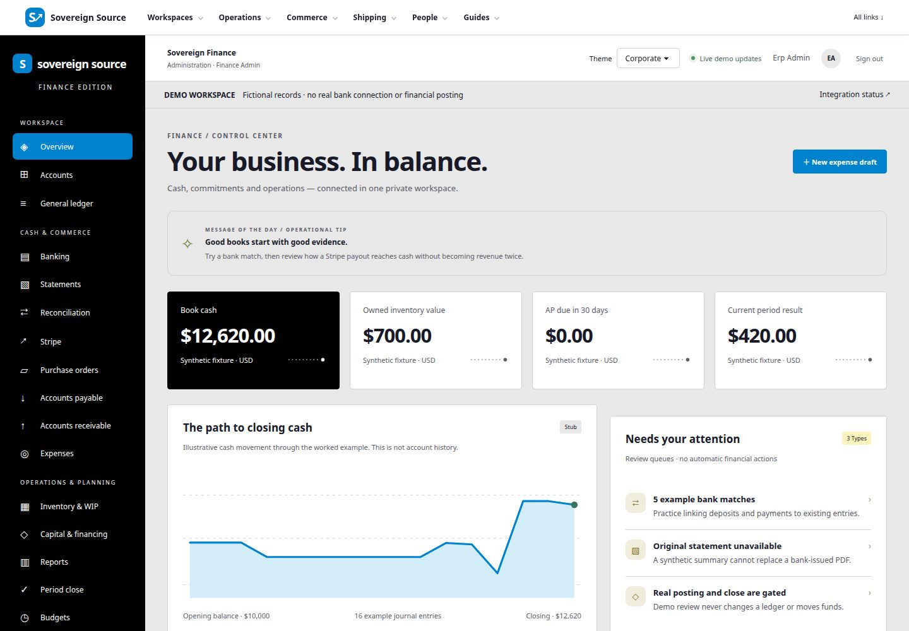
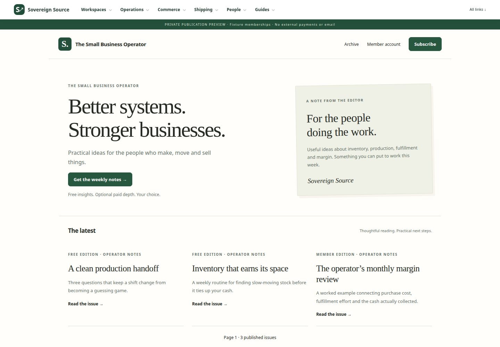

SaaSx2x · Screen gallery
See the workspaces.
Seven views of one connected platform, from daily operations to the customer experience.
Actual local development captures with demo data, reviewed for publication on October 21, 2026. These illustrate the interface, not a verified production release. Select an image to inspect it at full size.


Manufacturing overview
Production activity, review queues and plant notifications in the local pilot workspace.
View full size ↗

Warehouse overview
Inventory, picking and fulfillment indicators from the demo warehouse.
View full size ↗
Customer storefront
The Fieldwork demo store home page, with collections and featured products.
View full size ↗

Product detail
Product imagery, pricing, quantity selection and Add to cart in the demo store.
View full size ↗

Store-owner dashboard
Catalog controls and simulated checkout activity. Demo orders do not represent sales.
View full size ↗

Finance overview
Synthetic accounting figures and review queues; no real bank connection or financial posting.
View full size ↗

Publication and archive
A demo publication with free and member articles. External payments and email remain gated.
View full size ↗